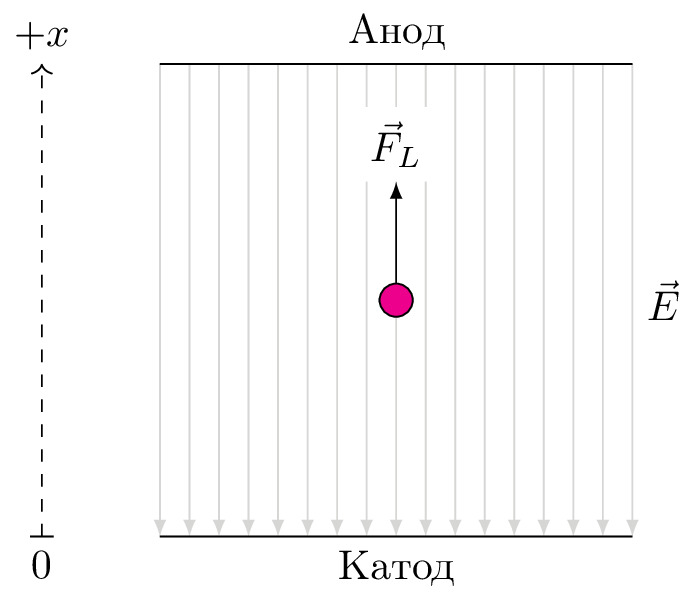

pre.tex
\documentclass[tikz]{standalone}\input{pre.tex}\begin{document}\begin{tikzpicture}
\foreach \x in {0,0.25,...,4} {
\draw[black!20,latex-] (\x,0) -- ++ (0,4);
}
\draw[draw=none] (4,0) -- node[right]{$\vec{E}$} ++ (0,4);
\draw (0,0) -- node[below] {Катод} ++(4,0);
\draw (0,4) -- node[above] {Анод} ++(4,0);
\draw[dashed,->] (-1,0) -- ++(0,4) node[above] {$+x$};
\draw (-1.1,0)--node [below] {$0$}(-0.9,0);
\draw[-latex] (2,2) -- ++ (0,1) node [above, fill=white] {$\vec{F}_L$};
\draw[fill=magenta] (2,2) circle (4pt);
\end{tikzpicture}\end{document}